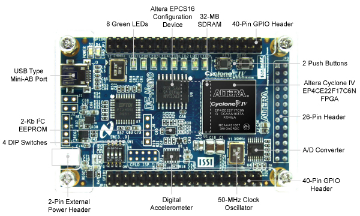

DE0-Nano Development Board

Specification
Cyclone® IV EP4CE22F17C6N FPGA
- 22,320 Logic elements (LEs)
- 594 Embedded memory (Kbits)
- 66 Embedded 18 x 18 multipliers
- 4 General-purpose PLLs
- 153 Maximum FPGA I/O pins
Configuration Status and Set-Up Elements
- On-board USB-Blaster circuit for programming
- FPGA Serial Configuration Device (EPCS)
Clock System
- On-board 50MHz clock oscillator
Expansion Header
- Two 40-pin Headers (GPIOs) provides 72 3.3V I/O pins
- Two 5V power pins, two 3.3V power pins and four ground pins
- One 26-pin header provides 16 3.3V digital I/O pins and 8 analog input pins to connect to analog sensors, etc
Memory Devices
- 32MB SDRAM
- 2Kb I2C EEPROM
General User Input/Output
- 8 green LEDs
- 2 debounced push-buttons
- 4 dip switches
G-Sensor
- ADI ADXL345, 3-axis accelerometer with high resolution (13-bit)
A/D Converter
- NS ADC128S022, 8-Channel, 12-bit A/D Converter
- 50 ksps to 200 ksps
Power Supply
- USB Type mini-AB port (5V)
- Two DC 5V pins of the GPIO headers (5V)
- 2-pin external power header (3.6-5.7V)